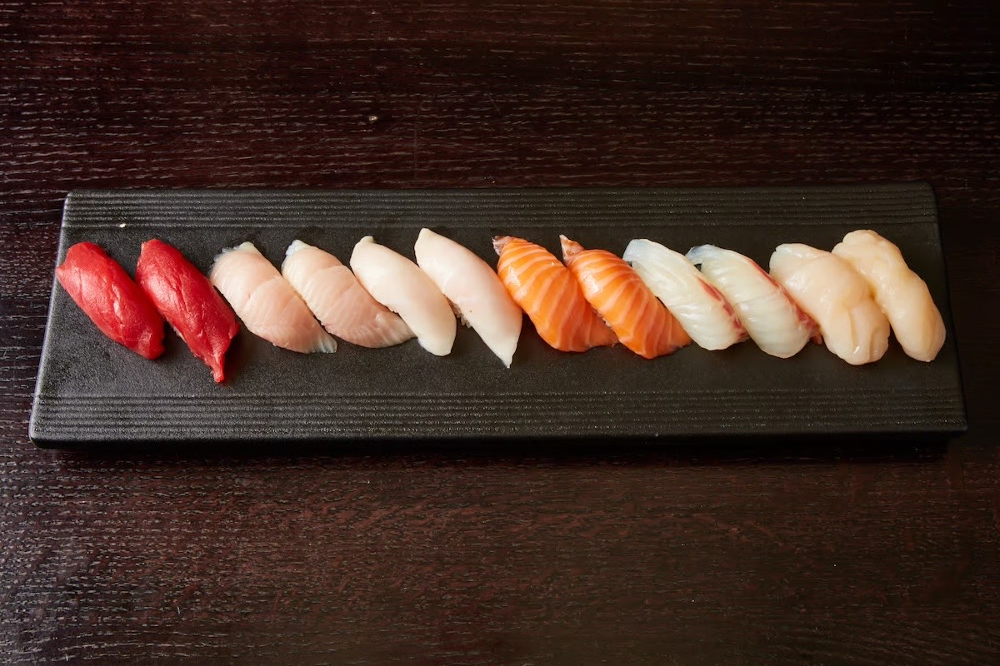

The Omakase Pass · Nashville
Private omakase across Nashville.

Nashville is where The Omakase Pass began. A vetted chef arrives at your home and works the counter in front of you, serving the best of the day's catch course by course — omakase made once, for your table alone.
Where we cook
We bring a chef to homes across the Nashville metro — from East Nashville, Germantown, and Green Hills to Belle Meade, and out to Franklin and Brentwood. If you're a little further afield, tell us where; we'll always try to make it work.
Ways to host
Three experiences, each matched to the evening you have in mind:
- The Counter for Two — an intimate omakase for two, built for date nights, proposals, and anniversaries.
- The Omakase Table — a seated, chef-curated tasting for anniversaries, rehearsal dinners, and milestone birthdays.
- The Sushi Party — a live in-home sushi station for bachelorette weekends and birthday parties, up to 25 guests.
Join the Waitlist
← All locations
Founding pricing for our first Nashville events. Questions? See the frequently asked questions.